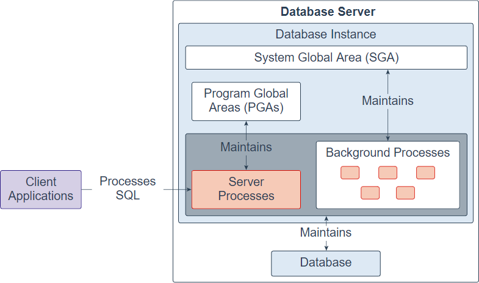
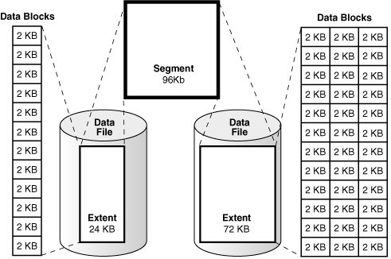

Oracle Architecture: A Quick Guide
Oracle Database architecture is designed to ensure high performance, scalability, and reliability. It’s a well-structured system that efficiently manages data through a combination of memory, processes, and storage. Here’s a simplified breakdown of its key components:
1. Oracle Instance
An Oracle instance is the gateway to the database. It consists of memory structures and background processes that work together to manage and access data. Think of it as the "engine" that keeps the database running.
Key Components:
- System Global Area (SGA): A shared memory region that stores data and control information.
- Database Buffer Cache: Keeps frequently accessed data blocks in memory for faster retrieval.
- Shared Pool: Stores SQL execution plans and metadata for efficient query processing.
- Redo Log Buffer: Temporarily holds changes made to the database for recovery purposes.
- Large Pool: Optional area for large operations like backups or parallel processing.
- Program Global Area (PGA): Private memory for each server process, used for sorting, hashing, and other operations.
- Background Processes: These handle essential tasks like writing data to disk (DBWn), logging changes (LGWR), and recovering the database (SMON).
2. Memory Structure
Oracle’s memory is divided into two main areas:
- SGA (System Global Area): Shared among all users and processes.
- PGA (Program Global Area): Private to each user session.
This separation ensures efficient resource utilization and prevents conflicts between users.

3. Storage Structure
Oracle uses a logical and physical storage structure to organize data:
Logical Storage:
- Tablespaces: Logical containers that group related data (e.g., one tablespace for HR data, another for Finance).
- Segments: Database objects like tables or indexes that consume storage.
- Extents: Contiguous blocks of storage allocated to segments.
- Data Blocks: The smallest unit of storage, typically 8KB in size. 
Physical Storage:
- Data Files: Store the actual data (e.g., tables, indexes).
- Control Files: Contain metadata about the database, such as its name and file locations.
- Redo Log Files: Record changes made to the database for recovery purposes.

Why Does This Matter?
Oracle’s architecture is designed to:
- Optimize Performance: By keeping frequently accessed data in memory (SGA) and minimizing disk I/O.
- Ensure Reliability: Through features like redo logs and background processes that protect data integrity.
- Scale Seamlessly: By allowing you to add more resources (memory, storage, processes) as your workload grows.
Real-World Analogy
Think of Oracle’s architecture like a library:
- SGA is the reading room, where popular books (data) are kept for quick access.
- PGA is your personal desk, where you work on your tasks without disturbing others.
- Tablespaces are the shelves, organizing books by category.
- Data Files are the storage rooms, where all the books are kept when not in use.
- Background Processes are the librarians, managing tasks like restocking shelves (writing data) and keeping records (logging changes).
- Redo Logs are the backup tapes, ensuring that data can be recovered in case of need.
- Control Files are the catalog, keeping track of all the books (database objects)